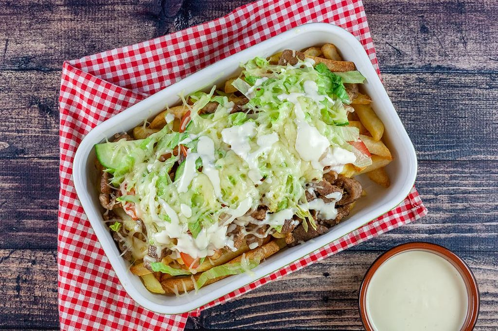

Kapsalon

De Kapsalon
Een kapsalon is een gerecht bestaande uit friet bedekt met shoarma, afgetopt met kaas, even onder de grill gezet, zodat de kaas smelt, met bovenop salade. Vaak wordt de kapsalon geserveerd met knoflooksaus en sambal.
Ingredienten
- 600 gram varkensvees
- Shoarmakruiden
- 4 handen vol friet
- Kwart ijsbergsla
- 2 tomaten
- Kwart komkommer
- Geraspte kaas
- Knoflooksaus
Voorbeiding
- Snijd het vlees in dunne reepjes en meng dit met 2 eetlepels shoarma kuiden. Laat het vlees minimaal een half uur marineren voor het beste resultaat
- Snijd de ijsbergsla in mooie fijne dunne reepjes. Was de tomaat en komkommer en snijd deze allebij in halve dunne plakjes.
- Heb je nou zin om zelf je knoflooksaus of shoarmakruiden te maken klik dan deze links.
Now Let's Cook
- Bak de frieten! Dit kun je doen in zowel een friteuse als een airfryer natuurlijk!
- Ga nu het vlees bakken. Dit doe je door de pan goed voor te warmen en op temperatuur te laten komen. Gooi hierna een flinke scheut olie in de pan en bak hierin de shoarma reepjes enkele minuten.
- Na het bakken van de friet en de shoarma pak je een ovenschaal en verdeel je op de onderste laag de frietjes hierboven op mag je de shoarma mooi even verdelen.
- kleed de kapsalon aan met de gesneden groente en verdeel deze mooi over de schaal.
- strooi als laatst de kaas over de kapsalon.
- Zet de kapsalon in de oven en laat deze 10 minuten bakken op 200 graden.
- Het is je gelukt! Eetsmakelijk alvast!.